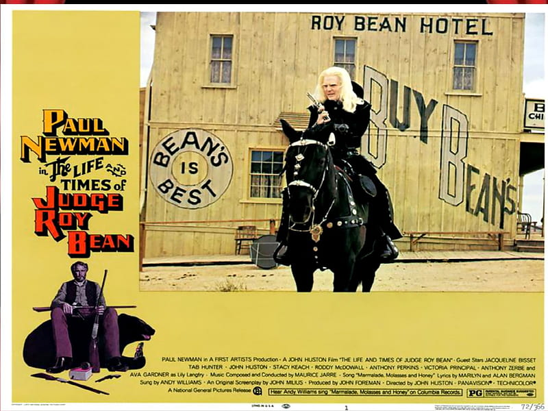

Celebrities
Believe it or not! Beans have a staple place within pop culture in regards to popular characters portrayed by famous actors as well as being the last name of said actors such as Sean Bean who plays Boromir in the "Lord of the Rings" or famous comedic character Mr.Bean, portrayed by Rowan Atkinson.

